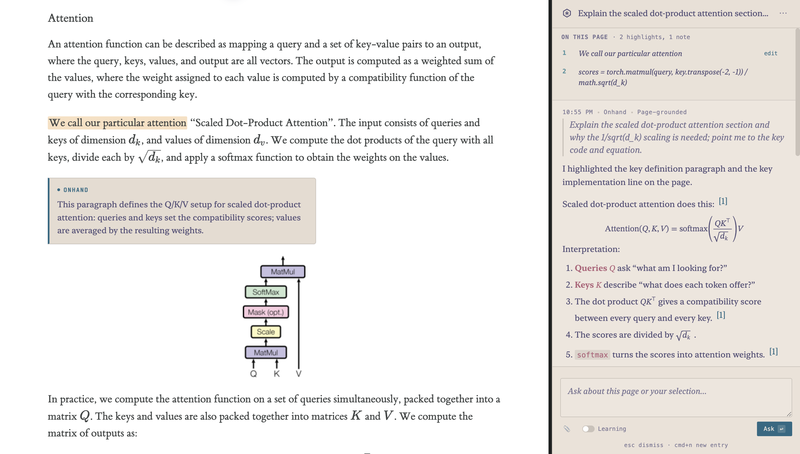

Understand the paper you're reading
Ask for the main contribution, how the method works, what a figure shows, or what an equation means. Onhand answers from the paper and highlights each passage it relied on, so you can read the evidence in context instead of trusting a summary. Select a sentence to ask about just that part.
Follow citations
Ask what a reference like [14] actually says. Onhand finds the reference, opens the cited paper, and answers from it, highlighting the passage that supports the claim. It can also look up a web page's citations.
Compare papers
With two papers open in different tabs, ask how they relate. Onhand reads the clearly related tab and highlights each claim in the paper it came from.
Pick up where you left off
Every session is saved in your browser with its highlights, notes and answers. Reopen it later and the paper is marked up as you left it. To learn the material rather than skim it, turn on Learning: Onhand asks guiding questions and checks your understanding as you go.
Try it
Add Onhand to Chrome, open the page you're reading, and click the
Onhand icon or press Ctrl+Shift+Space
(⌘+Shift+Space on a Mac). Onhand Free needs no account
or API key and has a daily limit; you can also sign in with your
ChatGPT plan or use your own OpenAI, Anthropic, Google Gemini or
OpenRouter key.